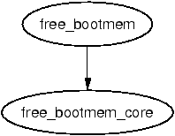

The functions in this section are responsible for bootstrapping the boot memory allocator. It starts with the architecture specific function setup_memory() (See Section B.1.1) but all architectures cover the same basic tasks in the architecture specific function before calling the architectur independant function init_bootmem().
This is called by UMA architectures to initialise their boot memory allocator structures.
304 unsigned long __init init_bootmem (unsigned long start,
unsigned long pages)
305 {
306 max_low_pfn = pages;
307 min_low_pfn = start;
308 return(init_bootmem_core(&contig_page_data, start, 0, pages));
309 }
This is called by NUMA architectures to initialise boot memory allocator data for a given node.
284 unsigned long __init init_bootmem_node (pg_data_t *pgdat,
unsigned long freepfn,
unsigned long startpfn,
unsigned long endpfn)
285 {
286 return(init_bootmem_core(pgdat, freepfn, startpfn, endpfn));
287 }
Initialises the appropriate struct bootmem_data_t and inserts the node into the linked list of nodes pgdat_list.
46 static unsigned long __init init_bootmem_core (pg_data_t *pgdat,
47 unsigned long mapstart, unsigned long start, unsigned long end)
48 {
49 bootmem_data_t *bdata = pgdat->bdata;
50 unsigned long mapsize = ((end - start)+7)/8;
51
52 pgdat->node_next = pgdat_list;
53 pgdat_list = pgdat;
54
55 mapsize = (mapsize + (sizeof(long) - 1UL)) &
~(sizeof(long) - 1UL);
56 bdata->node_bootmem_map = phys_to_virt(mapstart << PAGE_SHIFT);
57 bdata->node_boot_start = (start << PAGE_SHIFT);
58 bdata->node_low_pfn = end;
59
60 /*
61 * Initially all pages are reserved - setup_arch() has to
62 * register free RAM areas explicitly.
63 */
64 memset(bdata->node_bootmem_map, 0xff, mapsize);
65
66 return mapsize;
67 }
311 void __init reserve_bootmem (unsigned long addr, unsigned long size)
312 {
313 reserve_bootmem_core(contig_page_data.bdata, addr, size);
314 }
289 void __init reserve_bootmem_node (pg_data_t *pgdat,
unsigned long physaddr,
unsigned long size)
290 {
291 reserve_bootmem_core(pgdat->bdata, physaddr, size);
292 }
74 static void __init reserve_bootmem_core(bootmem_data_t *bdata,
unsigned long addr,
unsigned long size)
75 {
76 unsigned long i;
77 /*
78 * round up, partially reserved pages are considered
79 * fully reserved.
80 */
81 unsigned long sidx = (addr - bdata->node_boot_start)/PAGE_SIZE;
82 unsigned long eidx = (addr + size - bdata->node_boot_start +
83 PAGE_SIZE-1)/PAGE_SIZE;
84 unsigned long end = (addr + size + PAGE_SIZE-1)/PAGE_SIZE;
85
86 if (!size) BUG();
87
88 if (sidx < 0)
89 BUG();
90 if (eidx < 0)
91 BUG();
92 if (sidx >= eidx)
93 BUG();
94 if ((addr >> PAGE_SHIFT) >= bdata->node_low_pfn)
95 BUG();
96 if (end > bdata->node_low_pfn)
97 BUG();
98 for (i = sidx; i < eidx; i++)
99 if (test_and_set_bit(i, bdata->node_bootmem_map))
100 printk("hm, page %08lx reserved twice.\n",
i*PAGE_SIZE);
101 }
The callgraph for these macros is shown in Figure 5.1.
38 #define alloc_bootmem(x) \ 39 __alloc_bootmem((x), SMP_CACHE_BYTES, __pa(MAX_DMA_ADDRESS)) 40 #define alloc_bootmem_low(x) \ 41 __alloc_bootmem((x), SMP_CACHE_BYTES, 0) 42 #define alloc_bootmem_pages(x) \ 43 __alloc_bootmem((x), PAGE_SIZE, __pa(MAX_DMA_ADDRESS)) 44 #define alloc_bootmem_low_pages(x) \ 45 __alloc_bootmem((x), PAGE_SIZE, 0)
326 void * __init __alloc_bootmem (unsigned long size,
unsigned long align, unsigned long goal)
327 {
328 pg_data_t *pgdat;
329 void *ptr;
330
331 for_each_pgdat(pgdat)
332 if ((ptr = __alloc_bootmem_core(pgdat->bdata, size,
333 align, goal)))
334 return(ptr);
335
336 /*
337 * Whoops, we cannot satisfy the allocation request.
338 */
339 printk(KERN_ALERT "bootmem alloc of %lu bytes failed!\n", size);
340 panic("Out of memory");
341 return NULL;
342 }
53 #define alloc_bootmem_node(pgdat, x) \
54 __alloc_bootmem_node((pgdat), (x), SMP_CACHE_BYTES,
__pa(MAX_DMA_ADDRESS))
55 #define alloc_bootmem_pages_node(pgdat, x) \
56 __alloc_bootmem_node((pgdat), (x), PAGE_SIZE,
__pa(MAX_DMA_ADDRESS))
57 #define alloc_bootmem_low_pages_node(pgdat, x) \
58 __alloc_bootmem_node((pgdat), (x), PAGE_SIZE, 0)
344 void * __init __alloc_bootmem_node (pg_data_t *pgdat,
unsigned long size,
unsigned long align,
unsigned long goal)
345 {
346 void *ptr;
347
348 ptr = __alloc_bootmem_core(pgdat->bdata, size, align, goal);
349 if (ptr)
350 return (ptr);
351
352 /*
353 * Whoops, we cannot satisfy the allocation request.
354 */
355 printk(KERN_ALERT "bootmem alloc of %lu bytes failed!\n", size);
356 panic("Out of memory");
357 return NULL;
358 }
This is the core function for allocating memory from a specified node with the boot memory allocator. It is quite large and broken up into the following tasks;
144 static void * __init __alloc_bootmem_core (bootmem_data_t *bdata,
145 unsigned long size, unsigned long align, unsigned long goal)
146 {
147 unsigned long i, start = 0;
148 void *ret;
149 unsigned long offset, remaining_size;
150 unsigned long areasize, preferred, incr;
151 unsigned long eidx = bdata->node_low_pfn -
152 (bdata->node_boot_start >> PAGE_SHIFT);
153
154 if (!size) BUG();
155
156 if (align & (align-1))
157 BUG();
158
159 offset = 0;
160 if (align &&
161 (bdata->node_boot_start & (align - 1UL)) != 0)
162 offset = (align - (bdata->node_boot_start &
(align - 1UL)));
163 offset >>= PAGE_SHIFT;
Function preamble, make sure the parameters are sane
169 if (goal && (goal >= bdata->node_boot_start) &&
170 ((goal >> PAGE_SHIFT) < bdata->node_low_pfn)) {
171 preferred = goal - bdata->node_boot_start;
172 } else
173 preferred = 0;
174
175 preferred = ((preferred + align - 1) & ~(align - 1))
>> PAGE_SHIFT;
176 preferred += offset;
177 areasize = (size+PAGE_SIZE-1)/PAGE_SIZE;
178 incr = align >> PAGE_SHIFT ? : 1;
Calculate the starting PFN to start scanning from based on the goal parameter.
179
180 restart_scan:
181 for (i = preferred; i < eidx; i += incr) {
182 unsigned long j;
183 if (test_bit(i, bdata->node_bootmem_map))
184 continue;
185 for (j = i + 1; j < i + areasize; ++j) {
186 if (j >= eidx)
187 goto fail_block;
188 if (test_bit (j, bdata->node_bootmem_map))
189 goto fail_block;
190 }
191 start = i;
192 goto found;
193 fail_block:;
194 }
195 if (preferred) {
196 preferred = offset;
197 goto restart_scan;
198 }
199 return NULL;
Scan through memory looking for a block large enough to satisfy this request
200 found:
201 if (start >= eidx)
202 BUG();
203
209 if (align <= PAGE_SIZE
210 && bdata->last_offset && bdata->last_pos+1 == start) {
211 offset = (bdata->last_offset+align-1) & ~(align-1);
212 if (offset > PAGE_SIZE)
213 BUG();
214 remaining_size = PAGE_SIZE-offset;
215 if (size < remaining_size) {
216 areasize = 0;
217 // last_pos unchanged
218 bdata->last_offset = offset+size;
219 ret = phys_to_virt(bdata->last_pos*PAGE_SIZE + offset +
220 bdata->node_boot_start);
221 } else {
222 remaining_size = size - remaining_size;
223 areasize = (remaining_size+PAGE_SIZE-1)/PAGE_SIZE;
224 ret = phys_to_virt(bdata->last_pos*PAGE_SIZE +
225 offset +
bdata->node_boot_start);
226 bdata->last_pos = start+areasize-1;
227 bdata->last_offset = remaining_size;
228 }
229 bdata->last_offset &= ~PAGE_MASK;
230 } else {
231 bdata->last_pos = start + areasize - 1;
232 bdata->last_offset = size & ~PAGE_MASK;
233 ret = phys_to_virt(start * PAGE_SIZE +
bdata->node_boot_start);
234 }
Test to see if this allocation may be merged with the previous allocation.
238 for (i = start; i < start+areasize; i++) 239 if (test_and_set_bit(i, bdata->node_bootmem_map)) 240 BUG(); 241 memset(ret, 0, size); 242 return ret; 243 }
Mark the pages allocated as 1 in the bitmap and zero out the contents of the pages

Figure E.1: Call Graph: free_bootmem()
294 void __init free_bootmem_node (pg_data_t *pgdat,
unsigned long physaddr, unsigned long size)
295 {
296 return(free_bootmem_core(pgdat->bdata, physaddr, size));
297 }
316 void __init free_bootmem (unsigned long addr, unsigned long size)
317 {
318 return(free_bootmem_core(contig_page_data.bdata, addr, size));
319 }
103 static void __init free_bootmem_core(bootmem_data_t *bdata,
unsigned long addr,
unsigned long size)
104 {
105 unsigned long i;
106 unsigned long start;
111 unsigned long sidx;
112 unsigned long eidx = (addr + size -
bdata->node_boot_start)/PAGE_SIZE;
113 unsigned long end = (addr + size)/PAGE_SIZE;
114
115 if (!size) BUG();
116 if (end > bdata->node_low_pfn)
117 BUG();
118
119 /*
120 * Round up the beginning of the address.
121 */
122 start = (addr + PAGE_SIZE-1) / PAGE_SIZE;
123 sidx = start - (bdata->node_boot_start/PAGE_SIZE);
124
125 for (i = sidx; i < eidx; i++) {
126 if (!test_and_clear_bit(i, bdata->node_bootmem_map))
127 BUG();
128 }
129 }
Once the system is started, the boot memory allocator is no longer needed so these functions are responsible for removing unnecessary boot memory allocator structures and passing the remaining pages to the normal physical page allocator.
The call graph for this function is shown in Figure 5.2. The important part of this function for the boot memory allocator is that it calls free_pages_init()(See Section E.4.2). The function is broken up into the following tasks
507 void __init mem_init(void)
508 {
509 int codesize, reservedpages, datasize, initsize;
510
511 if (!mem_map)
512 BUG();
513
514 set_max_mapnr_init();
515
516 high_memory = (void *) __va(max_low_pfn * PAGE_SIZE);
517
518 /* clear the zero-page */
519 memset(empty_zero_page, 0, PAGE_SIZE);
520 521 reservedpages = free_pages_init(); 522
523 codesize = (unsigned long) &_etext - (unsigned long) &_text;
524 datasize = (unsigned long) &_edata - (unsigned long) &_etext;
525 initsize = (unsigned long) &__init_end - (unsigned long)
&__init_begin;
526
527 printk(KERN_INFO "Memory: %luk/%luk available (%dk kernel code,
%dk reserved, %dk data, %dk init, %ldk highmem)\n",
528 (unsigned long) nr_free_pages() << (PAGE_SHIFT-10),
529 max_mapnr << (PAGE_SHIFT-10),
530 codesize >> 10,
531 reservedpages << (PAGE_SHIFT-10),
532 datasize >> 10,
533 initsize >> 10,
534 (unsigned long) (totalhigh_pages << (PAGE_SHIFT-10))
535 );
Print out an informational message
536
537 #if CONFIG_X86_PAE
538 if (!cpu_has_pae)
539 panic("cannot execute a PAE-enabled kernel on a PAE-less
CPU!");
540 #endif
541 if (boot_cpu_data.wp_works_ok < 0)
542 test_wp_bit();
543
550 #ifndef CONFIG_SMP 551 zap_low_mappings(); 552 #endif 553 554 }
This function has two important functions, to call free_all_bootmem() (See Section E.4.4) to retire the boot memory allocator and to free all high memory pages to the buddy allocator.
481 static int __init free_pages_init(void)
482 {
483 extern int ppro_with_ram_bug(void);
484 int bad_ppro, reservedpages, pfn;
485
486 bad_ppro = ppro_with_ram_bug();
487
488 /* this will put all low memory onto the freelists */
489 totalram_pages += free_all_bootmem();
490
491 reservedpages = 0;
492 for (pfn = 0; pfn < max_low_pfn; pfn++) {
493 /*
494 * Only count reserved RAM pages
495 */
496 if (page_is_ram(pfn) && PageReserved(mem_map+pfn))
497 reservedpages++;
498 }
499 #ifdef CONFIG_HIGHMEM
500 for (pfn = highend_pfn-1; pfn >= highstart_pfn; pfn--)
501 one_highpage_init((struct page *) (mem_map + pfn), pfn,
bad_ppro);
502 totalram_pages += totalhigh_pages;
503 #endif
504 return reservedpages;
505 }
This function initialises the information for one page in high memory and checks to make sure that the page will not trigger a bug with some Pentium Pros. It only exists if CONFIG_HIGHMEM is specified at compile time.
449 #ifdef CONFIG_HIGHMEM
450 void __init one_highpage_init(struct page *page, int pfn,
int bad_ppro)
451 {
452 if (!page_is_ram(pfn)) {
453 SetPageReserved(page);
454 return;
455 }
456
457 if (bad_ppro && page_kills_ppro(pfn)) {
458 SetPageReserved(page);
459 return;
460 }
461
462 ClearPageReserved(page);
463 set_bit(PG_highmem, &page->flags);
464 atomic_set(&page->count, 1);
465 __free_page(page);
466 totalhigh_pages++;
467 }
468 #endif /* CONFIG_HIGHMEM */
299 unsigned long __init free_all_bootmem_node (pg_data_t *pgdat)
300 {
301 return(free_all_bootmem_core(pgdat));
302 }
321 unsigned long __init free_all_bootmem (void)
322 {
323 return(free_all_bootmem_core(&contig_page_data));
324 }
This is the core function which “retires” the boot memory allocator. It is divided into two major tasks
245 static unsigned long __init free_all_bootmem_core(pg_data_t *pgdat)
246 {
247 struct page *page = pgdat->node_mem_map;
248 bootmem_data_t *bdata = pgdat->bdata;
249 unsigned long i, count, total = 0;
250 unsigned long idx;
251
252 if (!bdata->node_bootmem_map) BUG();
253
254 count = 0;
255 idx = bdata->node_low_pfn -
(bdata->node_boot_start >> PAGE_SHIFT);
256 for (i = 0; i < idx; i++, page++) {
257 if (!test_bit(i, bdata->node_bootmem_map)) {
258 count++;
259 ClearPageReserved(page);
260 set_page_count(page, 1);
261 __free_page(page);
262 }
263 }
264 total += count;
270 page = virt_to_page(bdata->node_bootmem_map);
271 count = 0;
272 for (i = 0;
i < ((bdata->node_low_pfn - (bdata->node_boot_start >> PAGE_SHIFT)
)/8 + PAGE_SIZE-1)/PAGE_SIZE;
i++,page++) {
273 count++;
274 ClearPageReserved(page);
275 set_page_count(page, 1);
276 __free_page(page);
277 }
278 total += count;
279 bdata->node_bootmem_map = NULL;
280
281 return total;
282 }
Free the allocator bitmap and return